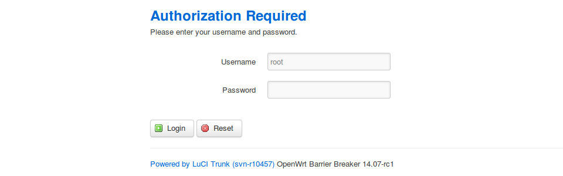

Home routers are more capable than default firmware would lead you to believe. I replace that firmware with OpenWrt: an embedded Linux distribution that converts energy-efficient, network-capable devices into much more useful hackable computers.
Let's go!
Getting its start hacking the original Linksys WRT54G, OpenWrt and its volunteer developers now support a wide and growing range of hardware. The project hosts software packages that lay out a smorgasboard of extra possibilities: more network tools with more fine-grained controls, plus a range of server capabilities... manage printers, connect external USB drives for backup, host files/torrents/VOIP/VPNs.
I am currently using an OpenWrt-supported TP-Link TL-WR841N router (~$25CAN) with:
- 802.11bgn with (2) fixed antennas (detachable on the otherwise identical WR841ND)
- 4 Port 10/100 LAN
- 1 Port WAN
- 4MB Flash + 32MB RAM
- hardware version: v8
Not much flash storage for added packages but its a cheap and cheerful device to hack on. [1] It has been running Barrier Breaker - the release candidate of the next upcoming version of OpenWrt - with no problems.
0. Download install image
WARNING! OpenWrt builds different install images for different devices. Consult the Table of Hardware to confirm your router is supported and read the wiki entry for your particular device to identify the correct image. It is easy to brick a device (render inoperable) using an incorrect install image.
TL-WR841N is an ar71xx device. New installs use the squashfs-factory.bin images. Download the latest RELEASE (14.07 as of 2014-10-02):
Source: openwrt-ar71xx-generic-tl-wr841n-v8-squashfs-factory.bin
1. Flash router
Log into the TP-Link router web interface (address=192.168.0.1 / user=admin / password=admin):
- Navigate to the update page System Tools->Firmware Upgrade
- Select openwrt-RELEASE-squashfs-factory.bin firmware image as the update package
- Allow several minutes for the device to write new firmware; when finished the device reboots
- Access router at address 192.168.1.1
2. First login
Use telnet (no password) to login for the first time to OpenWrt. Use passwd to create a new root password. Once password is modified telnet is disabled. Exit and re-login using SSH:
$ ssh root@192.168.1.1
Setup your internet connection either by editing /etc/config/network or using OpenWrt's Unified Configuration Interface (UCI). Example (pppoe) setup:
# uci set network.wan.proto=pppoe
# uci set network.wan.username='USERNAME@myisp.su'
# uci set network.wan.password='PASSWORD'
# uci commit network
# ifup wan
3. Web interface
OpenWrt can be configured in the console or install the optional LuCI web interface using the opkg package manager: [2]
# opkg update
# opkg install luci
After install LuCI is not running by default:
# /etc/init.d/uhttpd start # start the web server
# /etc/init.d/uhttpd enable # auto-start at boot
LuCI's web server uhttpd is configured in /etc/config/uhttpd and LuCI itself is configured in /etc/config/luci.
4. Go further
Its exciting what you can do with these consumer routers once you let it sink in that - with a few dollars and OpenWrt - you have an extremely configurable general purpose computer:
- SSH key authentication to secure access to router
- Static leases for hosts using DHCP
- Port forwarding to reach devices behind the firewall from the outside world
- Extend the range of a wireless network using an OpenWrt router as a bridged repeater
- Went one hack too far? "Resetting a TP-Link WR841N"
Happy hacking!
Notes
| [1] | OpenWrt surgery on more home routers: TL-MR3420, TL-WR1043ND, TL-WDR3600 |
| [2] | With only 4MB flash to play with there is less than 256K remaining in rootfs/overlay for more packages after installing LuCI. |